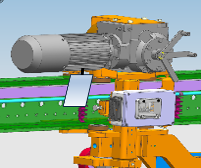

| 1.1 |
Visual inspection of weldings, sampling,
welding bend, check size of welding seams / EXC3 |
根据图纸对焊接进行目视检查 / EXC3 |
Optische Kontrolle der Schweißnähte, Probenahme, Schweißbogen, Kontrolle der Schweißnahtgröße / EXC3 |
Revision |
CN |
{{ protokol.oknok_1_1 }} |
{{ protokol.oknok_1_1_remark }} |
| 1.2 |
Visual inspection of weldings, sampling, welding bend, check size of welding seams / EXC3 |
根据图纸对焊接进行目视检查 / EXC3 |
Optische Kontrolle der Schweißnähte, Probenahme, Schweißbogen, Kontrolle der Schweißnahtgröße / EXC3 |

|
CN/Leipzig |
{{ protokol.oknok_1_2 }} |
{{ protokol.oknok_1_2 }} |
{{ protokol.oknok_1_2_remark }} |